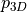
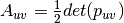

Submodules¶
AutoFiber generator¶
-
autofiber.generator.calcunitvector(vector)¶ Returns the unit vector of the given vector.
-
class
autofiber.generator.AutoFiber(cadfile, initpoint, initdirection, initnormal, materialproperties=(228.0, 0.2, None), fiberint=0.1, angle_error=0.01, accel=False)¶ -
assign_vertices()¶ Assign all vertices a uv coordinate based on the closest geodesic to the vertex Cleanup methods are employed here such as self.fill_missing_geodesics and self.fill_low_density_geodesics
Returns: Sets the self.geoparameterization
-
average_fpoint(leftover_idxs, mask)¶ Last ditch effort to assign the missed vertices. Simply average any nearby uv coordinates and make sure the new coordinate won’t flip the triangle.
Parameters: - leftover_idxs – Indices of missed vertices during assignment
- mask – Surface vertex index mask
Returns: Any vertex indices that were missed by this cleanup method
-
calc_geodesic(point, element, unitfiberdirection, uv_start, direction=1, parameterization=False, save_ints=True)¶ Calculates the geodesic path from a point in a given direction
Parameters: - point – The geodesic’s starting point
- element – The first element we will traverse
- unitfiberdirection – The desired direction the geodesic will propogate
- uv_start – Starting point in uv space
- direction – Positive (1) or negative (-1) direction of unitfiberdirection?
- parameterization – Do we want to save this geodesic into self.georecord for use in the parameterization?
- save_ints – Do we want to save intersection points for plotting purposes?
Returns: Adds the resulting geodesic path to the self.geoints and/or the self.georecord
-
calc_geodesics(startidx)¶ Computes the a geodesic path in the positive and negative direction for each point define in start_points beginning at the index startidx :param: startidx: Which index in self.startpoints to begin calculating geodesics at :return: Adds the relevant details for each geodesic to self.georecord
-
calcorientations_abaqus(modellocs, vertices, vertexids, inplanemat, texcoords2inplane, boxes, boxpolys, boxcoords)¶ Function optimized for Abaqus to determine the orientations of given locations.
Parameters: - modellocs – Points of interest on the surface or close to the surface
- vertices – Vertices of the model
- vertexids – Indices of the vertices of the model for each element
- inplanemat – Orthogonal matrix define by spatialnde
- texcoords2inplane – Transformation matrix between 3D space and uv space
- boxes – spatialnde polygon box definition
- boxpolys – spatialnde polygon definition relative to boxes
- boxcoords – spatialnde box vertex coordinates
Returns: Orientations at modellocs
-
calctransform(parameterization)¶ Calculate the transformation matrix between the 3D model and the uv parameterization using spatialNDE
Parameters: parameterization – uv parameterization Returns: Transformation matrix
-
check_negative_area(record)¶ Check to see if we have a triangle with a flipped normal
Parameters: record – Parameterization we want to check Returns: True if there is a flipped triangle, False otherwise
-
create_parameterization()¶ Create the uv parameterization based on the computed geodesic paths If vertices can’t be assigned or are missed cleanup methods are employed to attempt to solve coordinates for all vertices. This is difficult to make robust as geometric complexities can vary quite largely.
-
determine_surface(initpoint, initdirection)¶ Determine which surface of a 3D model we should operate on. This should single out a solo surface without sharp (90 degree) edges
Parameters: - initpoint – Starting point
- initdirection – Starting direction
Returns: Sets self.surface_vertexids
-
fiberoptimize(seed, precision=None, maxsteps=None, lr=None, decay=None, eps=None, mu=None)¶ Minimum strain energy optimization of a seed parameterization. Uses an RMSprop optimization algorithm.
Parameters: - seed – Initial uv parameterization
- precision – Termination threshold for the strain energy optimization
- maxsteps – Maximum number of optimizaiton iterations
- lr – Optimization rate (similar to learning rate in machine learning optimizers)
- decay – Decay rate
- eps – Error precision value
- mu – Momentum value
Returns:
-
fill_low_density_geodesics(minassigned)¶ Spin off more geodesics in elements that contain a low number of geodesics per area (This method is a little unreliable because the geodesics/area threshold isn’t well defined for all models)
Parameters: minassigned – Minimum number of neighbors that contain geodesics Returns: Nothing
-
fill_missing_geodesics(elements, minassigned)¶ Spin off more geodesics in elements that contain no geodesics (i.e. fill holes in the initially spawned geodesics)
Parameters: - elements – Elements without an geodesics
- minassigned – Minimum number of neighbors that contain geodesics
Returns: Nothing
-
find_close_geodesic(elements, point)¶ Find the closest geodesic in self.georecord and elements
Parameters: - elements – A given set of search elements for a close geodesic
- point – The point we want to find a close geodesic to
Returns: tuple(georecord, element closest geodesic is in,
[vector perpendicular to u direction norm(vector) = v distance, u distance])
-
find_startpoints(initpoint, initdirection, normal, cfpoint)¶ Determines starting location, direction, and element for each geodesic Spawns geodesics perpendicular to initdirection Geodesic start points are dropped in self.fiberint intervals
Parameters: - initpoint – Starting location (should be close to the center of the model)
- initdirection – Starting direction vector
- normal – Surface normal vector
- cfpoint – initpoint location in parameterization space
Returns: Appends new geodesic start information to the relevant lists
-
interpolate(leftover_idxs, mask)¶ Basic interpolation of uv coordinates based on nearby element fiber directions leftover from geodesic paths
Parameters: - leftover_idxs – Indices of missed vertices during assignment
- mask – Surface vertex index mask
Returns: Any vertex indices that were missed by this cleanup method
-
interpolate_geodesic(point, element, minassigned)¶ Determine a geodesics starting direction and uv parameterization location that is between two other geodesics
Parameters: - point – A point between two geodesics
- element – The element point is within or a vertex of
- minassigned – Minimum number of neighbor elements that have geodesics within them for the used starting element
Returns: The direction and uv parameterization location of the geodesic at point
-
interpolate_point(vertex)¶ Determine the uv coordinates of a point using the same method as interpolate_geodesic (Currently not being used as direct assignment is faster and more accurate than spinning off more geodesics)
Parameters: vertex – Starting vertex Returns: uv coordinates of vertex
-
layup(angle, orientation_locations=None, precision=0.0001, maxsteps=10000, lr=0.001, decay=0.7, eps=1e-08, mu=0.8, plotting=False, save=False)¶ Once the parameterization has been computed we can calculate any fiber orientation without needing to compute a new geodesic mapping. Simply rotate the geoparameterization by angle and then minimize the strain energy.
Parameters: - angle – Desired fiber orientation
- orientation_locations – Optional locations to calculate the fiber orientations at. Default is element centroids.
- precision – Termination threshold for the strain energy optimization
- maxsteps – Maximum number of optimizaiton iterations
- lr – Optimization rate (similar to learning rate in machine learning optimizers)
- decay – Decay rate
- eps – Error precision value
- mu – Momentum value
- plotting – Do we want to plot the results using matplotlib?
- save – Do we want to save the fiber orintations at orientation_locations to a .npy file
Returns: texcoords2inplane - Transformation matrix between 3D space and 2D space, once created any orientation at any
point on the surface can be evaluated.
-
loadobj()¶ Load a given CAD model using SpatialNDE Currently supported models are X3D, STL, and De-La-Mo/DMObjects
-
loadvars()¶ Load spatialnde data into the corresponding model variables
-
point_in_polygon_3d(vertices, point, inplanemat)¶ assumes vertices are coplanar, with given orthonormal 2D basis inplanemat.
-
AutoFiber geodesic¶
-
exception
autofiber.geodesic.EdgeError¶ Bases:
exceptions.Exception
-
autofiber.geodesic.angle_between_vectors(v1, v2)¶ Returns the angle in radians between vectors ‘v1’ and ‘v2’ https://stackoverflow.com/questions/2827393/angles-between-two-n-dimensional-vectors-in-python
-
autofiber.geodesic.calcbarycentric(point, element_vertices)¶ Convert 3d point to barycenteric coordinates https://en.wikipedia.org/wiki/Barycentric_coordinate_system https://math.stackexchange.com/questions/2292895/walking-on-the-surface-of-a-triangular-mesh
Parameters: - point – 3d point
- element_vertices – Vertices of current element
Returns: point in barycenteric coordinates
-
autofiber.geodesic.calcbarycentricdirection(vector, element_vertices)¶ Convert a direction vector from 3d to barycenteric coordinates https://en.wikipedia.org/wiki/Barycentric_coordinate_system https://math.stackexchange.com/questions/2292895/walking-on-the-surface-of-a-triangular-mesh
Parameters: - vector – Direction vector in 3d
- element_vertices – Vertices of current element
Returns: Vector in barycenteric coordinates (du, dv)
-
autofiber.geodesic.calcclosestpoint(unitvector, oldpoint, meshpoints, normal)¶ Find closest mesh vertex defined by the distances calculated in calcdistance
Parameters: - unitvector – Reference direction vector
- oldpoint – Start point for unitvector
- meshpoints – All test points
Returns: Closest point relative to unitvector
-
autofiber.geodesic.calcdistance(unitvector, oldvertex, meshpoints)¶ Calculate perpendicular distance between a ray and a point
Parameters: - unitvector – Reference vector to calculate distance from
- oldvertex – Start point for unitvector
- meshpoints – Test points
Returns: Perpendicular and parallel distance to each mesh point
-
autofiber.geodesic.calcnormal(points)¶ Returns the normal for the given 2d points
-
autofiber.geodesic.calcunitvector(vector)¶ Returns the unit vector of the vector.
-
autofiber.geodesic.check_inplane_pnt(point, element_vertices)¶ Determines if a point is within the plane of the current element face
Parameters: - point – A point within or on the edge of the current element
- element_vertices – Vertices of current element
Returns: True if the point is within in the plane, or False if otherwise
-
autofiber.geodesic.check_inplane_vector(vector, normal)¶ Determines if a vector is in plane with the current element
Parameters: - vector – Test vector
- normal – Normal of element
Returns:
-
autofiber.geodesic.check_intersection(p1, q1, p2, q2)¶ Check for an intersection between (p1, p2) and (q1, q2) https://www.geeksforgeeks.org/check-if-two-given-line-segments-intersect/
-
autofiber.geodesic.check_proj_inplane_pnt(point, element_vertices)¶ -
Parameters: - point – Test point to check
- element_vertices – Vertices of current element
Returns: True or False, depending on if the projected point is inside or outside
-
autofiber.geodesic.find_edge(point, direction, bary, error)¶ Determines which edge number is intersected first (0, 1, 2) -> (d12, d23, d31) https://math.stackexchange.com/questions/2292895/walking-on-the-surface-of-a-triangular-mesh
Parameters: - point – Start point
- direction – Current fiber direction
- error – Numerical tolerance
Returns: Edge number (0, 1, 2) or -1 if on an edge
-
autofiber.geodesic.find_element_vertex(point, unitvector, curnormal, vertices, vertexids, facetnormals)¶ Determines which element is next given a vertex and an angle
Parameters: - point – Vertex in the mesh
- unitvector – Fiber direction vector
- curnormal – Current element normal direction vector
- vertices – Mesh vertices
- vertexids – Id’s of mesh element vertices
- facetnormals – Normals of each element in mesh
Returns: The element in which the fiber direction vector resides
-
autofiber.geodesic.find_element_within(point, unitvector, normal, vertices, vertexids, facetnormals, inplanemat)¶ Determines which element a point is within
Parameters: - point – Vertex in the mesh
- unitvector – Fiber direction vector
- normal – Current element normal direction vector
Returns: The element that the point is within
-
autofiber.geodesic.find_intpnt(P1, P2, P3, P4)¶ Line-Line intersection method Returns: A point in 2d that intersects line P1P2 and P3P4 https://en.wikipedia.org/wiki/Line%E2%80%93line_intersection
-
autofiber.geodesic.find_neighbors(element, vertexids_indices, adjacencyidx)¶ Finds neighboring elements
Parameters: - element – Current element
- vertexids_indices – Indices of the mesh indices
- adjacencyidx – Built from spatialnde, index of element adjacency
Returns: An array of element numbers that neighbor the current element
-
autofiber.geodesic.invcalcbarycentric(pointuv, element_vertices)¶ Convert barycenteric coordinates into 3d https://en.wikipedia.org/wiki/Barycentric_coordinate_system https://math.stackexchange.com/questions/2292895/walking-on-the-surface-of-a-triangular-mesh
Parameters: - pointuv – Point in barycenteric coordinates (u, v)
- element_vertices – Vertices of current element
Returns: pointuv in 3d coordinates (x, y, z)
-
autofiber.geodesic.invcalcbarycentricdirection(vectoruv, element_vertices)¶ Convert vector in barycenteric coordinates into a 3d vector https://en.wikipedia.org/wiki/Barycentric_coordinate_system https://math.stackexchange.com/questions/2292895/walking-on-the-surface-of-a-triangular-mesh
Parameters: - vectoruv – Vector in barycenteric coordinate (du, dv)
- element_vertices – Vertices of current element
Returns: Vectoruv in 3d space (dx, dy, dz)
-
autofiber.geodesic.proj_vector(vector, newnormal)¶ Project a vector onto a surface defined by newnormal
Parameters: - vector – Vector to be projected
- newnormal – Normal of projected surface
Returns: Vector projected on surface defined by newnormal
-
autofiber.geodesic.rot_vector(oldnormal, newnormal, vector, force=False)¶ Rotate a vector given an axis and an angle of rotation Returns: Vector reoriented from an old element face to a new element https://en.wikipedia.org/wiki/Rodrigues’_rotation_formula
-
autofiber.geodesic.traverse_element(af, element, point, unitfiberdirection, length, uv_start, direction=1, parameterization=True)¶ Traverse a triangular element
Parameters: - af – Autofiber object
- element – Current triangular element
- point – Current point
- unitfiberdirection – Current direction vector
- length – Current length of the geodesic
- uv_start – Start point of geodesic in uv space
- direction –
- for positive geodesic direction, (-1) for negative geodesic direction
- parameterization – Are we going to record geodesic details for use in parameterization calculation?
Returns: next intersection point, next unitfiberdirection based on next element, next element
-
autofiber.geodesic.vector_inbetween(v1, v2, v3, error=1e-10)¶ Determines if a vector (v1) is between v2 and v3 https://stackoverflow.com/questions/13640931/how-to-determine-if-a-vector-is-between-two-other-vectors
Parameters: - v1 – Test vector
- v2 – Given vector
- v3 – Given vector
Returns: True if vector is between v2 and v3, false if not between
AutoFiber optimization¶
-
autofiber.optimization.build_checkerboard(w, h)¶ https://stackoverflow.com/questions/2169478/how-to-make-a-checkerboard-in-numpy Build a checkerboard array
Parameters: - w – width of checkerboard
- h – height of checkerboard
Returns: checkerboard array of width w and height h
-
autofiber.optimization.calc2d(obj, points)¶ Calculate a 2D representation of a 3D model
Parameters: - obj – spatialnde object
- points – 3D model points to be converted to 2D
Returns: points in 2D space
-
autofiber.optimization.calcunitvector(vector)¶ Returns the unit vector of the vector.
-
autofiber.optimization.computeglobalstrain(normalized_2d, fiberpoints, vertexids, stiffness_tensor)¶ Compute the strain energy between a 2d representation of a surface and a uv parameterization


Parameters: - normalized_2d – 2D representation of a 3D model
- fiberpoints – uv parameterization
- vertexids – Vertex indices of each element in the 3D model
- stiffness_tensor – Stiffness tensor of the given material
Returns: The computed total strain energy between normalized_2d and fiberpoints
-
autofiber.optimization.computeglobalstrain_grad(normalized_2d, fiberpoints, vertexids, stiffness_tensor, oc)¶ Compute the gradient of the strain energy function defined above with respect to the movement of each point in the uv parameterization.
Parameters: - normalized_2d – 2D representation of a 3D model
- fiberpoints – uv parameterization
- vertexids – Vertex indices of each element in the 3D model
- stiffness_tensor – Stiffness tensor of the given material
- oc – A vertex index which we want to constrain by fixing it’s location
Returns: The gradient of strain energy with respect to movement of each point in the uv parameterization
-
autofiber.optimization.minor(arr, i, j)¶ https://stackoverflow.com/questions/3858213/numpy-routine-for-computing-matrix-minors Calculate the minor of a matrix with ith row, jth column removed
Parameters: - arr – Matrix of interest
- i – row to remove
- j – column to remove
Returns: minor of arr with ith row removed and jth column removed
AutoFiber analyze_uv¶
-
autofiber.analyze_uv.BuildEdgeDict(surface)¶ Create edge dictionary from a surface. The edge dictionary is indexed by a tuple (vertexindex1,vertexindex2) of indices into surface.vertexes. It contains a list of polygon ids that have an edge that shares these two vertices.
This function assumes that identical vertices in the surface have been merged, so the vertexindex uniquely identifies the vertex.
This function returns the edge dictionary
-
autofiber.analyze_uv.DetermineAdjacency(surface, edges, surfaceparameterization=None, texture=False)¶ - Build an adjacency index for the given surface
- with the given edgedict. The adjacency index has the same layout as surface.vertexidx, but additional entries may be -1 as facets may have fewer adjacencies than vertices.
The adjacency index contains the polygon numbers adjacent to the given polygon.
If texture=True is given as a parameter, then the adjacency index built up will only show adjacencies both in the polygon mesh and in the texture. In that case, the polygon indices will include both original polygons and redundant copies, so the polygon indices will range from 0 to vertexidx_indices.shape[0]+texcoordredundant_polystartindexs.shape[0]
-
autofiber.analyze_uv.FindTexPatches(surface, texadjacencyidx, surfaceparameterization=None)¶ Given a surface and a texture adjacency index (which contains the texture polygon numbers adjacent, to the given texture polygon, with polygons findable from surface.vertexidx_indices and surfaceparameterization.texcoordredundant…), separate the polygons of the surface into groups that have adjacent texture. Return a list of lists of polygon numbers.
-
autofiber.analyze_uv.IdentifyTexMaps(part, surfaceparameterizationmapping=None)¶ Trace through and identify all texture maps, given a part (ndepart instance)
If texture_urls are given through an appearance node, those are used. If the appearance node is missing or does not provide a texture_url, then a numbered name is used for that surface, of the form _unnamed_surface_%d
- Returns a tuple of two dictionaries:
- surface_texurl is indexed by the id of the surface object and contains the the texture url as a string. surfaces_bytexurl is indexed by texture url strings and contains a list of surface objects that share that texture url